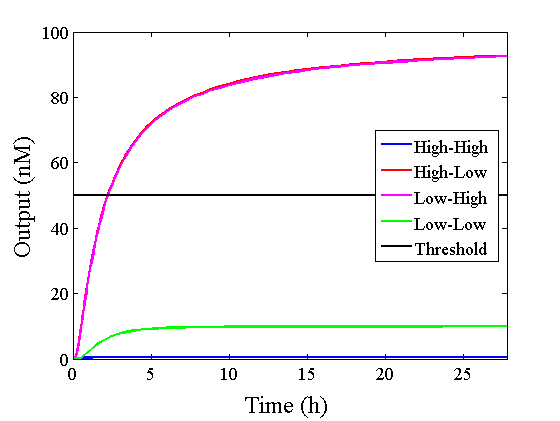

|
 |
Dry Experiment
We simulated the output concentration of the DNA Interference Canceller using numerical software (Matlab[1]); the performance and refinement are described herein. The threshold concentration was defined as 50 nM, where “High” > 50 nM and “Low” < 50 nM. We conducted four types of simulations: Pattern1, Input1 and Input2 were “Low”; Pattern2, Input1 was “High” and Input2 was “Low”; Pattern3, Input1 was “Low” and Input2 was “High”; and Pattern4, Input1 and Input2 were “High”. In addition, we set the initial input concentration at 100 nM (High) or 5 nM (Low).1.Confirmation of the output concentration for the DNA Interference Canceller
When Input1 and Input2 were added to the DNA Interference Canceller, we simulated the output concentration. Figure 1 shows XORgate schematic and Figure 2 shows the four simulation patterns.
Figure 1 : XORgate schematic

|
|
|
|
|
|
2.Introduction of the threshold gate
Through simulation with the DNA Interference Canceller, as described in section 1, when Input1 was “Low” and Input2 was “Low”, the output concentration was nearly equal to Input1 plus Input2. For this reason, connecting the DNA Interference Canceller as shown in Figure 3, the output concentration gradually increased and would be “High”, despite that both inputs were “Low” (Figure 4). In order to overcome this problem, we attached a threshold gate to the DNA Interference Canceller(Figure 5). Figure 6 shows the function of the threshold gate, which divided the input concentration into “High” or “Low” as a border threshold concentration. If the input concentration was “Low” after passing the threshold gate, the output concentration would be 0.5 nM. For this reason, the output of the DNA Interference Canceller attached to the threshold gate would not ever “High”, when both Input1 and Input2 were “Low”. Figure 7 shows the simulation of the DNA Interference Canceller with the threshold gate.
|
|
|
|
Figure 5 : XORgate with the threshold gate schematic |
Figure 6 : Threshold gate function |
|
|
|
|
|
|
3.Comparison of the DNA Interference Canceller with the combinational XOR circuit
As shown in Figure 8, the XOR circuit can be designed to combine the ANDgate, ORgate, and NOTgate.
Figure 8 : Combinational XOR circuit schematic
Realization of the combinational XORgate is difficult because the complex circuits in the DNA reaction system tend to cause unwanted reactions. We compare simulations between the DNA Interference Canceller and combinational XOR to determine which exhibited a simpler design.
Table 1 shows that the design using the DNA Interference Canceller was simpler because each number was lower. Thus, we then compared simulations using both approaches.

Figure 9 : Comparison of simulations
Figure 10 : Expansion of Figure 9, with the time scale changed to minutes
The graphs above show High-Low outputs because the concentration for the Low-Low output was less than 10-8 M.
We found that the output was “Low” when the graph’s value was comparatively low. Therefore, we set the threshold as 50 nM. With this threshold, the design using the DNA Interference Canceller was faster than the other design when the output was “High”. Because the threshold concentration was 50 nM, as shown in Figure 10, the output became “High” at 150 min. If we used the combinational circuit, 150 min may be a critical weak point. Our DNA Interference Canceller overcame this limitation.
Wet Experiment results
4.Verification Experiment
The measurement result after adding the Verification Input at 30 min passed the detection threshold after adding Reporter and Makeoutput1 in the cell, as shown in Figure 11.

Figure 11 : Verification Experiment
We found that Makeoutput1 and Reporter did not react because the Reporter intensity was almost unchanged before adding the Verification Input. After adding the Verification Input, the Reporter intensity changed. Therefore, we progressed to the main experiment.
5.Experiment of XOR
The experimental results for each pattern are shown below.
1) Pattern1: Input1 and Input2 were “Low” (Figure 12)
Figure 12 : Experimental results for Pattern1
2) Pattern2: Input1 was “High” and Input2 was “Low” (Figure 13)

Figure 13 : Experimental results for Pattern2
3) Pattern3: Input1 was “Low” and Input2 was “High” (Figure 14)

Figure 14 : Experimental results for Pattern3
4) Pattern4: Input1 and Input2 were “High” (Figure 15)
Figure 15 : Experimental results for Pattern4
The data for Patterns1~4 are shown together in Figure 15 below.

Figure 15 Combined data for Patterns1~4
1) Problem 1:
The concentration difference was too small compared with the simulation results when the output was “High” and “Low”.
2) Problem 2:
In Pattern2 and Pattern3, we could confirm that the output values were the same as the simulation result; however, the results from the actual experiment were different.
3) Problem 3:
The output value of Pattern1 was too high.
The causes of these problems are discussed below.
1) Cause of Problem 1:
Problem 1 was thought to be caused by the low concentration of each DNA; thus, the concentration difference between “High” and “Low” was small.
2) Cause of Problems 2 and 3:
Problems 2 and 3 were thought to be caused by noise from the spectrofluorometer.
Therefore, we will conduct additional experiments in an improved experimental environment, as follows:
・We will set each DNA concentration, except for Input1 and Input2, to twice as high as in the previous experiment in order to increase the concentration difference between “High” and “Low”.
・We will adjust the sensitivity of the spectrofluorometer to reduce the influence of noise.
As can be seen from figure 15, the output value of low-low was too high. It is caused by reaction which is not intended by us. Possible causes for the undesired reaction include: There are fraying of end each other at strands. Thereby, strands Reporter modification had been release. Future goal is redesigning base sequence for decrease the fray.
We considered the each Makecutter and Reporter may react, since they have same domain “ss3”. Due to fraying the ends of double strands in Reporter, the domain ss3 of each Makecutter can react to Reporter, then the strand having fluorescence molecule is released as Figure 16.
Figure 16: The reaction of each Makecutter and Reporter due to fraying the ends of double strands in Reporter
We performed further experiment to check whether our discussion is correct or not. One experiment is adding Makecutter1 and Reporter together, and the other is adding Makeoutput1 and Reporter together in a cell. If fraying the ends of double strands doesn’t occur, fluorescence intensity doesn’t change in a few hours.
Figure 17: The experimental result of Makecutter1 and Reporter
Figure 18: The experimental result of Makeoutput1 and Reporter
Figure 19: Zero adjust Figure 17 and Figure 18
The Figure 17 and Figure 18 are experimental result when Makecutter1 and Reporter are added, and Makeoutput1 and Reporter are added in a cell. We can confirm the strand having fluorescence molecule is released in Figure 17, since fluorescence intensity is changed in 3 hours. Compared to that, we can confirm the strand having fluorescence molecule isn’t released in Figure 18, since fluorescence intensity isn’t changed. These figures suggest that abnormality of the experimental value due to reaction of Makecutter1 and Reporter.
From the above, we concluded that undesired reactions occur by fraying the ends of double strands. Therefore we will have to redesign DNA sequence to decrease fray. For example, we will redesign Reporter like Figure 20 not to release the strand having fluorescence molecule when react to other domain.
Figure 20 Redesigned Reporter
In addition, we will try to design sequence having C-G bonds at ends of double strands to decrease the rate of fraying, and add “clamp” domains to decrease undesired reactions.
Refference
[1]Matlab:
http://jp.mathworks.com/products/matlab/